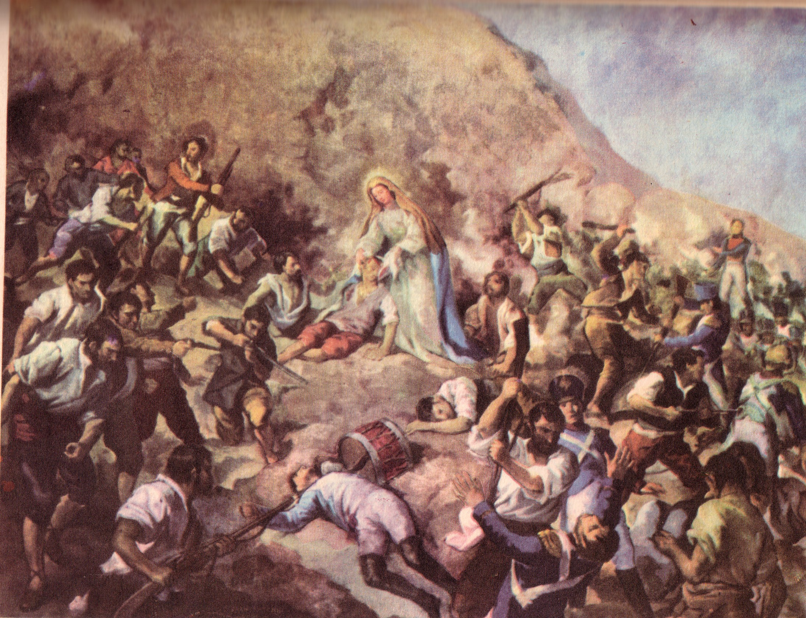

Son innumerables los milagros que se atribuyen a la sagrada imagen. Solo vamos a hacer referencia de los que han sido más nombrados por su gran significación, amén de los ya señalados en líneas anteriores.
Nuestra querida Virgencita, como madre y guía de muchas comunidades de Oriente y de otras regiones del país, está siempre pendiente de sus hijos. Ella es paño de lágrimas de personas humildes, faro de marinos y pescadores, solidaria con los presos, compañera de viajes, protectora de hogares, inspiradora de proyectos; ella comparte nuestras tristezas y alegrías, siendo bálsamo y consuelo para nuestras enfermedades y tristezas; ella escucha nuestros ruegos y plegarias por muy silenciosas que sean; está pendiente del naufrago, del estudiante, del deportista, del conductor y nos ayuda a tomar decisiones en los momentos aciagos de nuestra vida.
Los testimonios están presentes en cada uno de nosotros, en el sello endeble que en su nombre se nos imprime al nacer, en nuestra fe y esperanza; en el recuerdo que de ella llevamos dentro, en nuestras exclamaciones diarias, en nuestra forma de ser, reflejo de sus virtudes, siempre dispuesta al perdón, a la entrega total, al compartir, a la caridad, al desprendimiento y a la laboriosidad. También está el testimonio, en los innumerables exvotos, que no nos cansamos de mirar, para deleite de nuestros ojos y la alegría de nuestro espíritu, presentes en las vidrieras de su museo, bajo formas y gustos diversos. Está también en las colas que a diario se hacen para mirar y tocar su manto; en el sol que cada año soportamos para apreciarla, el día de su natividad. en los apretujones de que somos objeto para contemplarla a su paso en la procesión; en las caminatas que le ofrecemos en las peregrinaciones o por la cantidad de ramos de flores y de velas que llevamos diariamente a sus plantas o por el orgullo y satisfacción que sentimos, cuando nuestros hijos, nietos y sobrinos le colocamos su nombre o el deseo de cargarla en nuestros hombros o llevarla con nosotros bajo cualquiera de las formas que se ofrecen en el mercado.
Lo cierto de todo esto, lo que todo margariteño sabe en el fondo, lo que no necesita discusión, lo que cada año nos lleva a sus plantas, es saber que ella es grande, bella y hermosa; es patrimonio cultural y religioso nuestro, es tradición y fuente de fe; es esperanza y amor, es la perla entre las perlas. Ella robo nuestros corazones desde siempre y para siempre.
En vista del cuantioso material que existe, sobre las narraciones que se han hecho, de los milagros atribuidos a la Virgen del Valle que se han ido contando a través del tiempo, llegando a formar parte de las tradiciones culturales o de la historia, hemos hecho un resumen con los aspectos más resaltantes y significativos de cada uno, tratando de conservar, en el parafraseo que de ellos se hizo, su estilo original y su esencia. También, en éste caso, nuestra fuente fundamental es la obra ya citada del hermano Nectario Maria:
"La vigilancia y el bloqueo de las costas de la isla, por parte de los realistas, impedían el arribo de tres barcos, cargados con armas y pertrechos, que requerían los patriotas para la campaña independentista, obligó al General Juan Bautista Arismendi, devoto de la Santísima Virgen a ordenar una rogativa, solicitando la intercesión de esta madre piadosa, quien atenta a la suplica hizo el milagro de que los barcos atracaran en la costa sin mayores inconvenientes."
"En otra ocasión, estando en combate, el General Juan Bautista Arismendi fue blanco de la bala de un fusil que no logró penetrar sus órganos vitales, dado que se aplastó contra la medalla de la virgen que siempre lo acompañaba. Debido a la importancia de este portento, la bala fue engastada en oro fino y en la actualidad se exhibe en las vitrinas de su museo”[?].
"La tradición señalaba que durante la batalla de Matasiete (año 1917), los patriotas vieron movilizarse una señora de un lado a otro, prestando atención a los combatientes heridos, consolándolos, curándolos o suministrándoles agua; al buscarla los soldados para agradecerle sus favores, no la encontraron por ninguna parte, cayendo en cuenta que se trataba de la Virgen del Valle”.

"Es bastante conocido el milagro de Domingo, brujo de cabeza, picado por una raya en una pierna que se estaba gangrenando y a punto de amputar. Angustiado por ello, se encomendó a la Virgen del Valle y le ofreció la promesa de obsequiarle la primera perla que obtuviera después de sanar. Como lo había prometido, después de su breve curación, se lanzó al mar, logrando sacar una concha, con una perla de rara forma en su interior, semejando las mismas características del lugar de la ulceración y de la forma de la pierna. Lo digno de reflejar en este caso es que Domingo rechazó numerosas ofertas y cumplió con el ofrecimiento que había hecho a su Virgencita. Hoy este exvoto ocupa lugar privilegiado en las vitrinas del museo." [?].
"El dueño de una plantación de cacao, ante la amenaza de una plaga de langostas que estaban consumiendo numerosos huertos, ofrece a la Virgen del Valle una mazorca de oro, si le salvaba la cosecha del flagelo maligno. La presencia de exvoto en las vidrieras del Museo nos indican que la virgen oyó las suplicas" [?].
"En el año de 1903, un joven de Yaguaraparo, de la familia Alfonso Guevara, en compañía de otros amigos, fueron detenidos por emitir opiniones políticas, con la intención de trasladarlos a Maracaibo. La madre del joven al tener conocimiento de este hecho solicita a la Virgen del Valle su intervención y ofrece a cambio de la libertad de su hijo, la presencia de él ante sus plantas. Las suplicas no se hicieron esperar y por esos insondables e inexplicables casos de la vida, quedó en libertad sin que hubiese sido recapturado" [?].
"Una embarcación capitaneada por el genovés Luís Morazzo, junto con otros tripulantes, tres de los cuales eran margariteños, devotos de la Virgen del Valle, después de zozobrar el barco, por una tormenta que los azotó, en las aguas caribeñas de Granada y San Vicente, lograron asirse a una tabla que por varios días los llevó a la deriva en medio de las olas y el viento. Ante las adversidades de que fueron objeto, por el hambre y la sed que los agobiaban, se invocaron a la Virgen del valle, quien oyendo sus suplicas los lanzó a la playa de la Blanquilla, vivos y sanos. Este favor concedido por la virgen corresponde con un barquito de oro que reposa en el museo" [?].
"Eladia Salazar, por el año 1893, ante la posibilidad que su sobrina Jerónima Delgado quedara impedida por la herida de bala sufrida en una pierna, a consecuencia de un disparo accidental, se recomendó a la Virgen del Valle ofreciéndole enviar a la sobrina a darle gracias a su santuario. Ante esta suplica la sagrada imagen respondió, permitiendo que el proyectil saliera por una de las incisiones que permanecía abierta. En eterno agradecimiento, la Señora Envió su sobrina a El Valle a darle las gracias por intermedio de una misa" [?].
"Un caso bastante parecido al anterior le ocurrió al Sr. Diego Rodríguez, quien sanó inexplicablemente de una herida de bala, sin necesidad de ser operado de emergencia o de ser trasladado, pues la virgen acogió sus suplicas y le concedió el favor solicitado" [?].
"Haciéndose eco de un sabio mandato, Don Manuel Campo, capitán de la goleta Rosa Elena al ver que su barco estaba en agua, hundiéndose, después que la tripulación la abandonó, invocó a la Virgencita del Valle solicitando su salvación; estas suplicas no se hicieron esperar y al rato logró subir a la superficie y sujetarse de una tabla que lo llevó a la playa."
“Otro de los exvotos, correspondientes al año 1896, que se guardan en el Museo de la Virgen del Valle, es el correspondiente a un hueso que después de habérsele atravesado en la garganta a Eleuterio Bauza, sin que pudiera arrojarlo o digerirlo, fue expulsado involuntariamente, después de implorar a la Virgen del Valle su intersección” [?].
"Otro de los portentos, atribuidos a la fe de la gente en la Virgen del Valle, se produjo el año 1954 cuando Erasmo Heredia, margariteño de Porlamar, en compañía de otras cuatros tripulantes, se hicieron a la mar, desde Puerto Cabello, sin ninguna dificultad. Después de transcurrido un tiempo prudencial, se presentó una tempestad que hizo zozobrar la embarcación y haciendo que su capitán cayera al agua, sin poder ser rescatado. Pese a los esfuerzos hechos por el resto de la tripulación, cansado de nadar, sin rumbo fijo, encalambrado todo su cuerpo, perdido en su esperanza, exclamó a la Virgen del Valle, pidiéndole ayuda con una mirada en la medalla que llevaba puesta. No pasó mucho tiempo cuando divisó una playa que alcanzó. Después de nadar hasta quedar agotado y rendido sin fuerzas. La Virgen le concedió el favor solicitado y le condujo a un lugar cercano de un pueblo, donde pudo ser rescatado y trasladado a su hogar. Para ese entonces ya su familia lo había dado por muerto. Entre llantos y alegrías, aquel fue un día de resurrección para todos y culmino más tarde, con la presencia de Erasmo que cumplió su promesa braceando desde las puertas del santuario" [?].
"Tres oficiales de Panamerican, en Maiquetía, de nombres José Sánchez, Antonio Arteaga y José Isabel Hernández, en el mes de Febrero de 1961, fueron seleccionados para el traslado de dos cajas, contentivas de 600 morocotas en un trayecto entre Curazao y Buenos Aires. Aprovechándose de la buena fé y confianza que la compañía tenia depositado en éstas personas, un empleado del mismo departamento robó una de las cajas. Después de haber sido detenido e interrogados, los tres oficiales, sin perder la fe en su inocencia, clamaron a la Virgen, ofreciéndole una misa y una cajita de oro. La respuesta no se hizo esperar, apareciendo la caja en la carretera de Carayaca a 30 kilómetros de Maiquetía con el dinero completo" [?].
"En otra ocasión, el mismo Sr. José Sánchez invocó a la Virgen del Valle, solicitándole su intervención en la curación de su esposa, a quien los médicos no daban esperanza de recuperación, después de una intervención que sería sumamente difícil. Habiendo sido tratada por veintidós médicos, perdidas las esperanzas, le fue concedida la gracia solicitada y al año siguiente fueron a cumplir la promesa ante sus plantas" [?].
"La Virgen del Valle también nos oye cuando le solicitamos para nosotros mismos, hacer realidad un sueño que nos permita emprender una empresa. Fue así como Heriberto Salas, por circunstancias de la vida, llegó a conocer a la Virgen del Valle en un viaje de distracción que quiso realizar con destino a Trinidad. En el breve lapso de tiempo que permaneció el avión, en su escala en Porlamar, se dio por enterado que el intenso movimiento de población, ese día 8 de Septiembre, se debía a las festividades de la Virgen del Valle. Intrigado por conocer de que se trataba, emprendió camino hacia El Valle y al encontrarse cerca de ella en la procesión, sintió en su cuerpo un estremecimiento. Con lágrimas de emoción le pidió a la Virgen que lo ayudara en la primera empresa que se le presentara. Por tratarse de una persona humilde, huérfano de niño, proveniente de los andes venezolanos, la virgen sintió su fe y su confianza, concediéndole lo pedido. Con el tiempo, montó la fábrica de colchones 'Sweet Dream' que, para nadie es un secreto, tiene sucursales en todo el país" [?].
"También de los incrédulos que han perdido la fe y denigran de la iglesia, se encarga la Virgen del Valle de llevarlos hasta sus plantas, en búsqueda de arrepentimiento y piedad para su alma. Algo de ésto le sucedió a un ingeniero, de origen Noruego, trabajador de las empresas de hierro del Caroní, quien encontrándose de viaje de placer en Margarita, le llamó la atención entrar al Santuario. Encontrándose ante las plantas de la Virgen, de rodillas y en sollozo le acudió un deseo inmenso de quedarse viviendo definitivamente en el Valle, donde había encontrado un remanso de paz y de fe”[?].